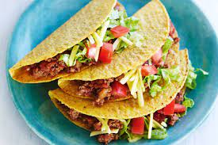
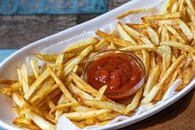

FOODMANIA
Dessert
This weeeks feature dessert is.......CHOCOLATE MOUSSE! These treats are an essential after a long week!

Ingridients (4 serves)
- 3 eggs
- 125g dark chocolate 70% cocoa
- 10g unsalted butter
- 1/2 cup cream, full fat
- 3 tbsp caster sugar
- Whipped cream
- Chocolate shavings
Recipe
- Separate eggs and yolks while eggs are cold. Place whites in a large bowl and yolks in a small bowl. Leave whites while you prepare other ingredients.
- Whisk yolks and place chocolate and butter in a bowl to melt in the microwave in 30-second bursts until smooth.
- Beat cream until stiff peaks form then add sugar. Beat whites until firm peaks form and fold egg yolks into the cream using a rubber spatula.
- Pour chocolate into cream yolk mixture and add 1/4 of beaten egg whites into chocolate mixture. Fold through until incorporated.
- Pour chocolate mixture into egg whites. Fold through until incorporated and no more white lumps remain.
- Divide mixture between 4 small glasses or pots. Refrigerate for at least 5 hours, preferably overnight.
- To serve, garnish with cream and chocolate shavings.
Tips
It is not possible to achieve the same result without using eggs, despite what other recipes promise - and I've tried many. It will either be denser, or be like eating whipped cream, or have a weird jelly like texture more like pana cotta.

Upcoming Posts

Learn how to make my Homemade Raspberry Sorbet recipe and you'll be enjoying this delightful frozen dessert in just minutes! This cold, refreshing summertime dessert will perfect your summer!

Beef Tacos – the old school way!!! With juicy seasoned beef taco meat and crispy shells, this taco recipe is made with a simple yet flavour packed homemade taco seasoning that truly tastes like store bought.

Learn the secret to making the best homemade French fries from russet potatoes right at home! These are easy to make ahead of time and fry or bake in the oven for a quick snack or side dish idea!
Back to the Top